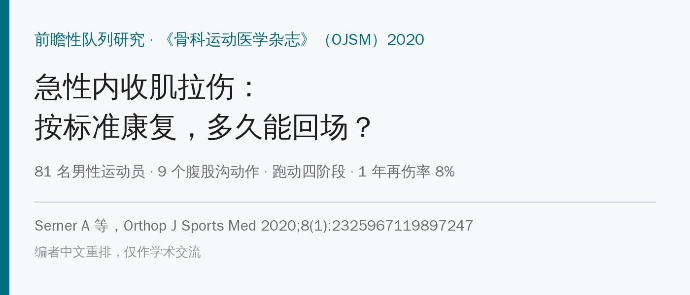
🔖原文信息（编者中文重排）
📚 文献信息
▪ Serner A, Weir A, Tol JL, Thorborg K, Lanzinger S, Otten R, Hölmich P. Return to Sport After Criteria-Based Rehabilitation of Acute Adductor Injuries in Male Athletes: A Prospective Cohort Study. Orthop J Sports Med. 2020;8(1):2325967119897247.
▪ 作者来自卡塔尔 Aspetar 骨科与运动医学医院、荷兰鹿特丹伊拉斯谟大学、丹麦哥本哈根大学医院等
▪ 前瞻性队列研究（证据等级 2 级）；DOI：10.1177/2325967119897247
▪ 本文训练方案细节来自原文补充材料附录 2（治疗方案手册）
内收肌拉伤在足球里太常见了：精英足球一个赛季的发生率约 14%，平均缺阵 14 天。但奇怪的是，在这篇研究之前，没有任何一个公开发表的、基于标准的急性内收肌康复方案。什么时候可以跑、什么时候可以踢球、什么时候能回队，几乎全靠各队医疗团队“看着办”。
Aspetar 的团队做了一套只用弹力带、标志桶和球就能做的标准化方案：一条腹股沟训练线、一条跑动线，各分 4 个阶段，每个阶段都有明确的进阶标准；两条线都过了“临床无痛”，再做 2～3 天场上专项训练，然后回队。
先说结论：磁共振 0～2 级损伤，约 2 周临床无痛、约 3 周回队；3 级（撕脱/完全断裂）大多 3 个月内回队。1 年再伤率 8%；达到“临床无痛”标准的人再伤率 5%，没达到的 21%。
• 对象：2013—2017 年 4 个赛季，卡塔尔 Aspetar 医院，81 名男性运动员（18～40 岁），受伤 7 天内就诊、临床诊断为急性内收肌损伤
• 项目：足球 58%、五人制足球 22%，其余为手球、排球、篮球等；都在国家最高两个级别联赛
• 磁共振分级：0 级无急性损伤（14 人）、1 级只有水肿（20 人）、2 级肌内液体（结构破坏，30 人）、3 级撕脱或完全断裂（17 人）；以长收肌为主
• 三个重返运动节点：① 临床无痛；② 完成受控专项训练；③ 回归全队训练（由俱乐部决定，不设标准）
• 随访：回队后 2、6、12 个月电话随访再伤
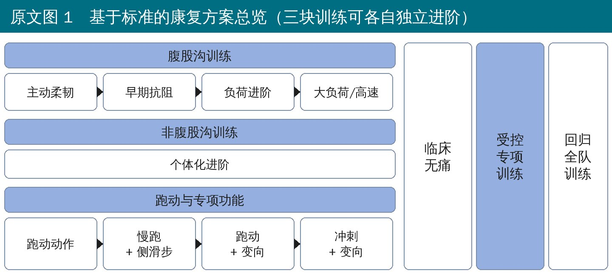
🔖原文图 1 方案总览
• 三块训练可以各自独立进阶：比如腹股沟训练还在第 2 阶段，跑动已经到第 4 阶段，没问题
• 两条线的标准都满足后，才进入场上受控专项训练
• 治疗师一对一监督，每周最多 5 次；腹股沟训练隔天做，每周 3 次（给内收肌 48 小时恢复）
• 另外 2 天做非腹股沟训练（以后链为主：髋外展肌、伸髋肌、腘绳肌、小腿），必须完全不引起内收肌疼痛，内容不统一
• 禁止：治疗性超声、激光、干针；受伤部位不做按摩（别处可以做 5 分钟以内）；不开非甾体抗炎药；吃止痛药期间不允许进阶
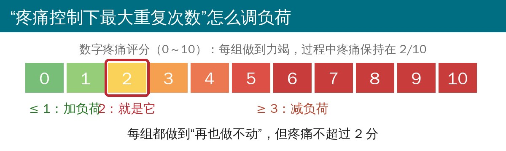
🔖疼痛控制下最大重复次数示意（编者根据附录 2 绘制）
急性拉伤的人很难按常规“10RM”来定负荷，因为疼痛会先到。作者的办法是：每组做到力竭，但疼痛保持在 2/10——疼痛 ≤ 1 就加负荷，≥ 3 就减负荷。他们管这叫“疼痛控制下最大重复次数（PRM）”。加负荷的方法很简单：站得离弹力带固定点远一点，或者多加一根弹力带。
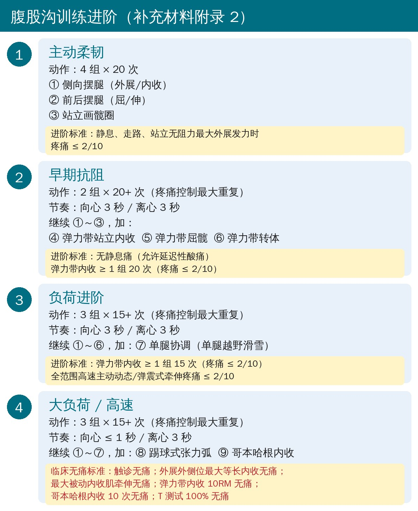
🔖腹股沟训练四阶段与进阶标准
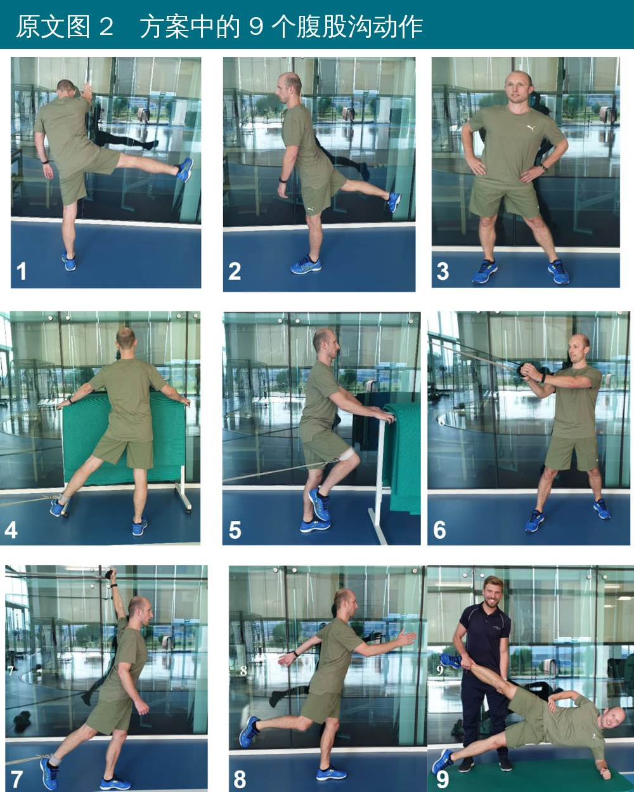
🔖原文图 2 9 个腹股沟动作
9 个动作的具体做法（来自附录 2）：
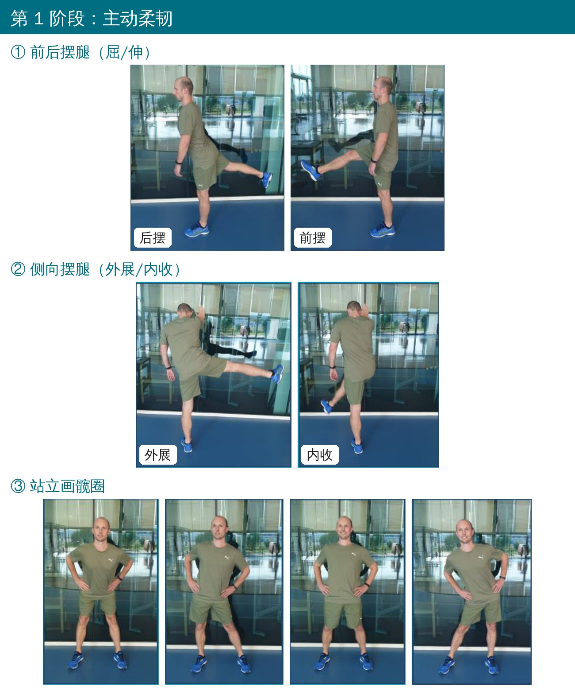
🔖第 1 阶段动作
• ① 前后摆腿：单腿站，同侧手扶稳定物，另一条腿像踢球一样前后摆，逐步加大幅度和速度；胸口朝前，支撑腿的髋不要屈
• ② 侧向摆腿：单腿站，双手扶前方稳定物，腿在身体前方左右摆；胸口朝前，脚尖始终朝前
• ③ 站立画髋圈：两脚约 1.5 倍髋宽，双手叉腰，骨盆和髋画圈，圈越画越大、越画越快
• 剂量：4 组 × 20 次
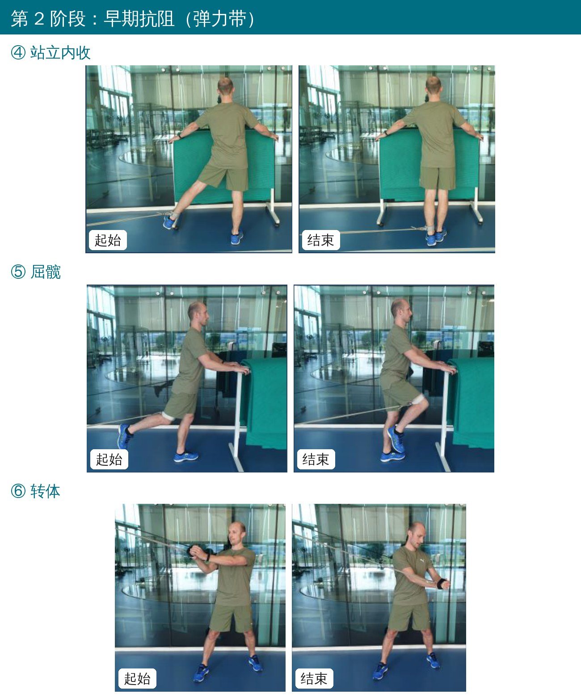
🔖第 2 阶段动作
• ④ 弹力带站立内收：单腿站，另一条腿尽量往外打开，弹力带套在踝上、一开始就要有张力；上身保持直立扶稳，腿往内收到碰到支撑腿，位置在支撑脚后方约半个脚长，脚尖始终朝前。这个动作同时也是进阶的“考试动作”
• ⑤ 弹力带屈髋：单腿站扶稳，弹力带套在膝上方，腿从最大伸髋位往前上方屈到约 45°，小腿放松；收紧腹肌，骨盆不动，只有髋在动
• ⑥ 弹力带转体：前后脚站，侧对固定点（固定点高于肩，靠近固定点的腿在前），手臂微屈，转上身把弹力带拉过去；骨盆保持不动
• 剂量：2 组 × 20+ 次（PRM），向心 3 秒、离心 3 秒
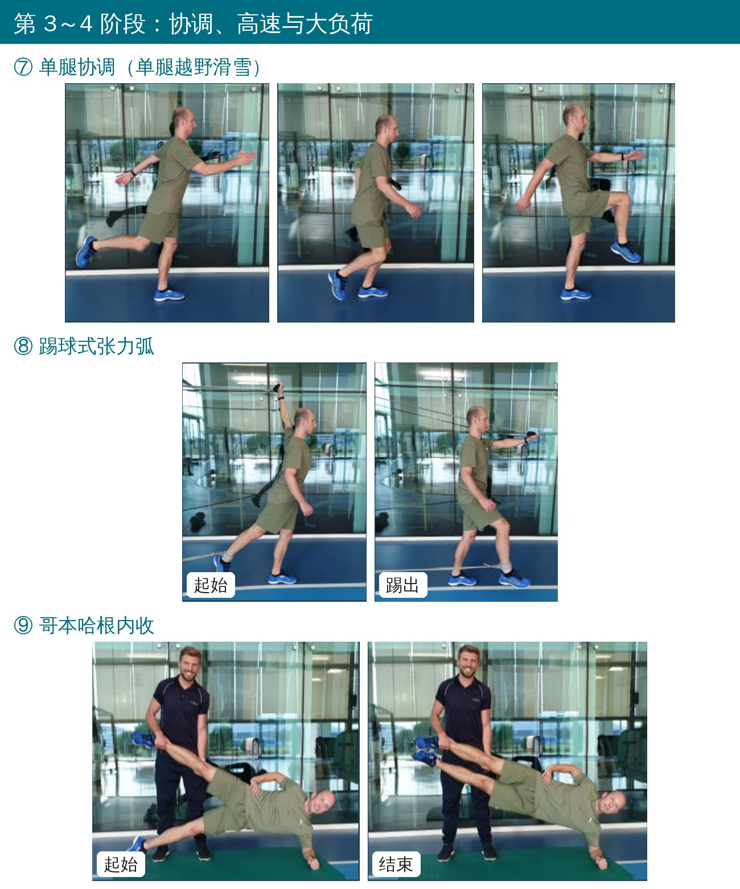
🔖第 3～4 阶段动作
• ⑦ 单腿协调（单腿越野滑雪）：单腿站，支撑腿屈伸，另一条腿和双臂同步前后摆，对侧手腿一起往前；可以手持哑铃进阶
• ⑧ 踢球式张力弧：两根弹力带，一根低位套在摆动腿踝上，一根高位由对侧手握住；手脚同时快速向前（< 1 秒），像踢球加投掷，再 3 秒慢慢回来，摆动脚中途不落地
• ⑨ 哥本哈根内收：侧卧前臂撑地，上方腿由同伴托住（一手托踝、一手托膝，高度约在同伴髋部）；身体抬起成一条直线、下方腿抬起与上方脚并拢，再慢慢放下骨盆和下方腿（脚轻点地面但不借力）。训练重点在上方腿。没有同伴可以把上方腿搭在与站立髋同高的床上
• 第 4 阶段节奏改为向心 ≤ 1 秒、离心 3 秒；回到赛场后建议每周继续做 2 次哥本哈根内收
附录 2 弹力带内收动作的负荷参数
| 参数 | 第 2 阶段 | 第 3 阶段 | 第 4 阶段 |
|---|---|---|---|
| 负荷 | 疼痛 2/10 内的最大负荷 | 疼痛 2/10 内的最大负荷 | 疼痛 2/10 内的最大负荷，或 10RM |
| 次数 | > 20 | 16～20 | 10～15 |
| 组数 | 2 | 3 | 4 |
| 组间休息 | 个体化 | 个体化 | 个体化 |
| 每周次数 | 3 | 3 | 3 |
| 节奏（向心/等长/离心） | 3 秒 / 0 / 3 秒 | 3 秒 / 0 / 3 秒 | ≤ 1 秒 / 0 / 3 秒 |
| 总受力时间 | 252 秒以上 | 288～360 秒 | 160～240 秒 |
| 是否做到力竭 | 是 | 是 | 是 |
| 活动范围 | 髋中立到最大外展 | 髋中立到最大外展 | 髋中立到最大外展 |
| 两次训练间隔 | 48 小时 | 48 小时 | 48 小时 |
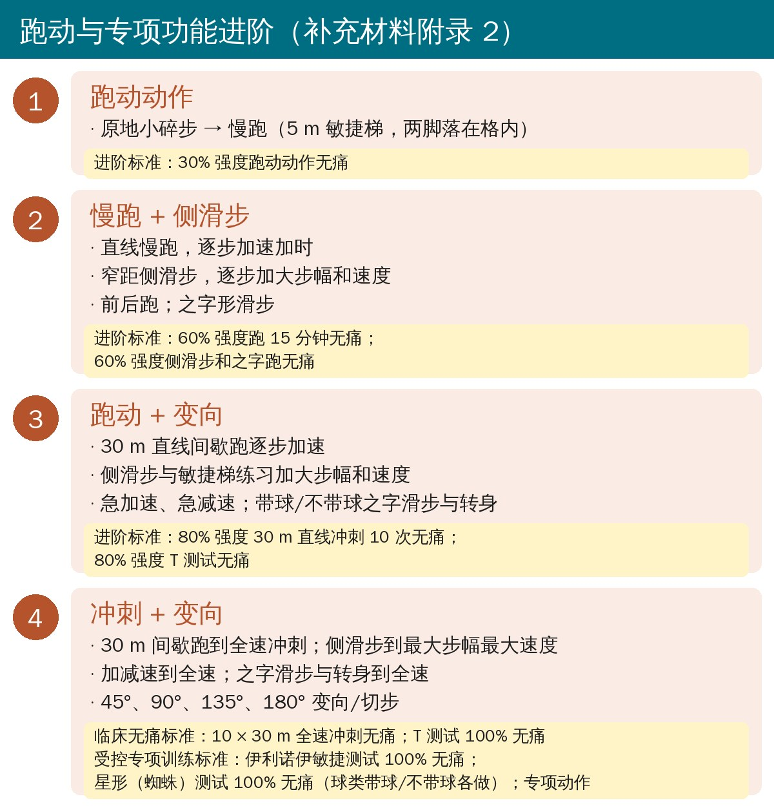
🔖跑动与专项功能四阶段与进阶标准
• 跑步时也按 2/10 疼痛来推：疼痛加重就减速，但尽量别停
• 加速时整个上身前倾、步子迈小一点，比挺胸直立跑更省内收肌
• 敏捷梯练习包括：横向滑步（每格两脚）、左右侧步（“伊基滑步”）、单腿斜向跳格；加减速用 5/10 m 标志桶往返
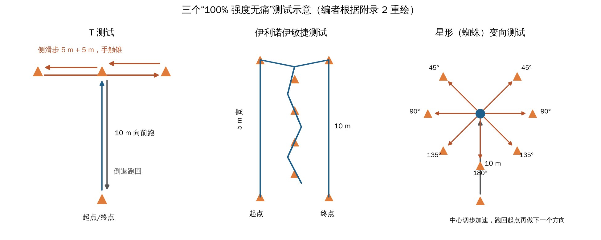
🔖三个“100% 强度无痛”测试（编者重绘）
原文表 1 完成康复方案的标准
| 临床无痛 | 完成受控专项训练 |
|---|---|
| 内收肌触诊无痛 | 伊利诺伊敏捷测试 100% 强度无痛 |
| 外展外侧位最大等长内收无痛 | 星形（蜘蛛）测试 100% 强度无痛 |
| 最大被动内收肌牵伸无痛 | 按项目调整的专项训练/测试无痛（以足球为例）： |
| 弹力带内收 10RM 无痛 | · 预设和反应性变向（带球/不带球） |
| 哥本哈根内收 10 次无痛 | · 跳跃（双脚/单脚，水平/垂直） |
| 10 × 30 m 直线冲刺 100% 强度无痛 | · 直传，逐步拉长距离；传中（站立和跑动中） |
| T 测试 100% 强度无痛 | · 角球/球门球；射门；一对一 |
原文表 1 排版中冲刺和 T 测试位置不清，此处按补充材料附录 2 归入“临床无痛”。室内项目受控专项训练至少 2 次（2 天），室外项目至少 3 次（3 天）。
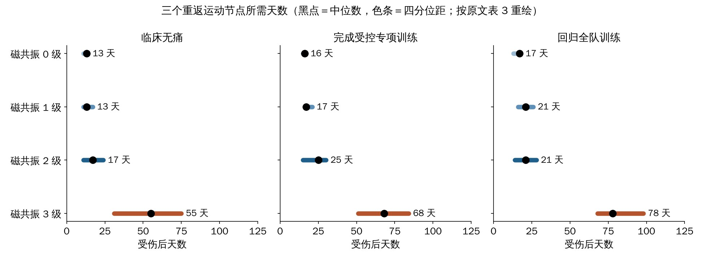
🔖三个节点所需天数（按原文表 3 中位数和四分位距重绘）
• 0、1、2 级之间没有差别，合并后中位数：临床无痛 13 天、完成专项训练 17 天、回队 18 天
• 3 级：临床无痛 55 天、完成专项训练 68 天、回队 78 天（最长 224 天）
• 依从性：完成专项训练的 50 人，出勤率 89%；0～2 级中位数 10 次监督课，3 级 40 次
• 完成时：髋腹股沟功能问卷（HAGOS）各分项中位数 96～100；活动度、离心内收和外展力量左右基本对称（97%～101%）；只有 3 级损伤的仰卧离心内收力量对称性约 80%
再伤：1 年内 6 人（8%），其中 5 人发生在回队后 2 个月内。达到临床无痛的人：0～2 个月再伤 3%，1 年 5%；没达到的人：21%，差异有统计学意义。完成专项训练与否也有类似趋势（6% vs 13%），但不显著。其他类型的腹股沟痛两组差不多（约 1/5）。
作为对照：欧洲精英足球急性内收肌损伤 2 个月内再伤率 18%，卡塔尔精英足球急性腹股沟伤 2 个赛季内再伤率 27%。
• 没有对照组：不知道这套方案本身是否缩短了恢复时间，只能说“按这套走，大概需要这么久”
• 全是男性、八成是足球/五人制足球，女性和其他项目要谨慎套用
• 再伤只有 6 例，比较“达到 vs 没达到临床无痛”时，没达到组只有 14 人，统计很不稳；再伤靠电话随访，没有统一复查
• 伤得轻的可能没来医院（就诊中位数在伤后 4 天），所以没有一个人在 7 天内完成康复，0～2 级的恢复时间可能偏长
• 回队时间由俱乐部决定、不设标准；有 11 人疼着就回队了，“回队 93%”并不都是按标准达到的
• 原文的小问题：表 2 的体重指数写成 23.9 ± 7.6（范围 18～37，与年龄范围相同），补充材料表 A1 为 24.0 ± 2.8；HAGOS 运动分项基线中位数 31 却落在四分位距 47～67 之外；完成专项训练时仍有 3 人触诊痛、4 人抗阻痛，和“触诊无痛”的标准矛盾；附录中第 4 阶段一处写 3 组、一处写 4 组
这篇最实用的地方，是给了一套不靠时间、靠标准的急性内收肌康复路线，而且设备要求极低。可以直接借用的几条：
• 负荷用“疼痛 2/10 下做到力竭”来定，比固定次数更贴合急性期
• 腹股沟训练隔天做、跑动可以每天推，两条线各走各的，不互相拖
• 弹力带内收 20 次 → 15 次 → 10RM 作为进阶的“考试动作”，最后加上哥本哈根内收 10 次无痛
• 回队前至少要过“临床无痛”这一关：触诊、等长内收、被动牵伸、10RM 内收、哥本哈根 10 次、10 × 30 m 冲刺、T 测试，全部无痛
• 给病人和教练的预期：0～2 级约 3 周回队，3 级约 2～3 个月；回队后继续每周 2 次哥本哈根内收
原文表 2 81 名运动员基本情况
| 项目 | 数值 |
|---|---|
| 年龄（岁） | 25.7 ± 4.3（18～37） |
| 身高（cm） | 179.6 ± 8.9（162～210） |
| 体重（kg） | 77.6 ± 13.7（47～115） |
| 体重指数（kg/m²） | 23.9 ± 7.6（18～37）（原文如此） |
| 项目 | 足球 47（58%）、五人制足球 18（22%）、手球 5（6%）、排球 5（6%）、篮球 4（5%）、铅球 1（1%）、乒乓球 1（1%） |
| 磁共振 0 级 | 14（17%） |
| 磁共振 1 级 | 20（25%）：长收肌 14、短收肌 3、大收肌 1、耻骨肌 1、闭孔外肌 1 |
| 磁共振 2 级 | 30（37%）：长收肌 27、耻骨肌 1、闭孔外肌 2 |
| 磁共振 3 级 | 17（21%）：均为长收肌 |
原文表 3 受伤到三个重返运动节点的天数（中位数（四分位距）[范围]）
| 分组 | 临床无痛 n | 天数 | 完成专项训练 n | 天数 | 回归全队 n | 天数 |
|---|---|---|---|---|---|---|
| 全部 | 61 | 15（12～29）[6～166] | 50 | 24（16～34）[9～212] | 75 | 22（15～33）[5～224] |
| 0 级 | 12 | 13（11～14）[6～23] | 9 | 16（15～17）[10～27] | 13 | 17（13～18）[5～27] |
| 1 级 | 16 | 13（11～17）[7～33] | 13 | 17（16～21）[9～37] | 18 | 21（16～26）[7～41] |
| 2 级 | 20 | 17（11～24）[7～44] | 16 | 25（15～30）[10～64] | 28 | 21（14～28）[7～57] |
| 0～2 级合并 | 48 | 13（11～21）[6～44] | 38 | 17（15～27）[9～64] | 59 | 18（14～27）[5～57] |
| 3 级 | 13 | 55（31～75）[27～166] | 12 | 68（51～84）[32～212] | 16 | 78（68～98）[35～224] |
原文表 4 初诊与完成专项训练时的问卷、力量和活动度
| 指标 | 初诊 n | 初诊 | 完成时 n | 完成时 |
|---|---|---|---|---|
| HAGOS 疼痛（0～100） | 48 | 75（55～86） | 47 | 100（98～100） |
| HAGOS 症状 | 48 | 57（41～79） | 47 | 96（93～100） |
| HAGOS 日常活动 | 48 | 75（55～88） | 47 | 100（100～100） |
| HAGOS 运动 | 48 | 31（47～67）（原文如此） | 47 | 100（97～100） |
| HAGOS 生活质量 | 48 | 65（40～85） | 47 | 100（85～100） |
| 内收肌触诊痛 | 50 | 50（100%） | 50 | 3（6%） |
| 内收肌抗阻痛 | 50 | 46（92%） | 50 | 4（8%） |
| 内收肌牵伸痛 | 50 | 34（68%） | 50 | 0 |
| 屈膝外倒测试 对称性 | 49 | 89%（63～107） | 49 | 99% ± 18 |
| 髋外展活动度 对称性 | 48 | 82% ± 25 | 49 | 101% ± 7 |
| 能做离心力量测试 | 47 | 28（60%） | 49 | 49（100%） |
| 侧卧离心内收力量 对称性 | 28 | 71% ± 23 | 49 | 97% ± 13 |
| 患侧 / 健侧（Nm/kg） | 2.1 ± 0.9 / 3.0 ± 0.5 | 3.3 ± 0.6 / 3.4 ± 0.6 | ||
| 侧卧离心外展力量 对称性 | 28 | 94% ± 16 | 49 | 101% ± 14 |
| 内收/外展比 患侧 / 健侧 | 28 | 0.85 / 1.13 | 49 | 1.18 / 1.24 |
| 仰卧离心内收力量 对称性 | — | — | 49 | 99% ± 17 |
中位数（四分位距）、例数（%）或均值 ± 标准差。对称性＝患侧/健侧。
原文表 5 按节点分组的再伤和其他腹股沟痛（例数/随访人数（%））
| 回归全队 | 完成专项训练 | 未完成专项训练 | 临床无痛 | 未达临床无痛 | |
|---|---|---|---|---|---|
| 人数 | 75 | 50 | 25 | 61 | 14 |
| 再伤 0～2 月 | 5/74（7） | 2/50（4） | 3/24（13） | 2/60（3） | 3/14（21） |
| 再伤 0～6 月 | 6/73（8） | 3/49（6） | 3/24（13） | 3/59（5） | 3/14（21） |
| 再伤 0～12 月 | 6/72（8） | 3/48（6） | 3/24（13） | 3/58（5） | 3/14（21） |
| 其他腹股沟痛 0～2 月 | 10/74（14） | 7/50（14） | 3/24（13） | 8/60（13） | 2/14（14） |
| 其他腹股沟痛 0～6 月 | 13/73（18） | 9/49（18） | 4/24（17） | 11/59（19） | 2/14（14） |
| 其他腹股沟痛 0～12 月 | 15/72（21） | 9/48（19） | 6/24（25） | 12/58（21） | 3/14（21） |
补充材料表 A3 按磁共振分级的再伤情况（累计）
| 回归全队 | 完成专项 | 未完成专项 | 临床无痛 | 未达临床无痛 | |
|---|---|---|---|---|---|
| 0～2 级 人数 | 59 | 38 | 21 | 48 | 11 |
| 再伤 0～2 / 0～6 / 0～12 月 | 7% / 9% / 9% | 3% / 5% / 6% | 15% / 15% / 15% | 2% / 4% / 4% | 27% / 27% / 27% |
| 其他腹股沟痛 0～12 月 | 21% | 19% | 25% | 22% | 18% |
| 3 级 人数 | 16 | 12 | 4 | 13 | 3 |
| 再伤 0～12 月 | 1/16（6%） | 1/12（8%） | 0/4 | 1/13（8%） | 0/3 |
| 其他腹股沟痛 0～12 月 | 19% | 17% | 25% | 15% | 33% |
补充材料表 A2（节选） 0～2 级与 3 级完成专项训练时的对比
| 指标 | 0～2 级 | 3 级 |
|---|---|---|
| HAGOS 症状（中位数） | 100 | 89 |
| HAGOS 生活质量 | 100 | 85 |
| 侧卧离心内收力量对称性 | 97% | 95% |
| 仰卧离心内收力量对称性 | 105% | 80% |
| 内收/外展比（患侧） | 1.24 | 0.96 |
| 完成时触诊痛 / 抗阻痛 | 5% / 5% | 8% / 17% |
补充材料表 A1（各节点人群基本情况）与表 2 基本一致，略。
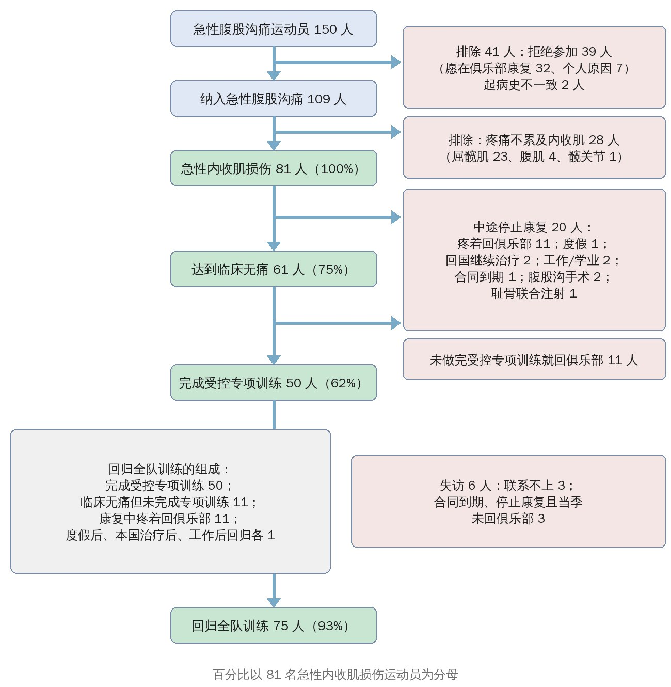
🔖原文图 3 受试者流程（中文重绘）
欢迎关注骨科康复小黄公众号，获取更多物理治疗的专业知识！
📄参考文献：
Serner A, Weir A, Tol JL, Thorborg K, Lanzinger S, Otten R, Hölmich P. Return to Sport After Criteria-Based Rehabilitation of Acute Adductor Injuries in Male Athletes: A Prospective Cohort Study. Orthop J Sports Med. 2020;8(1):2325967119897247. doi:10.1177/2325967119897247
原文以 CC BY-NC-ND 4.0 协议开放获取（仅限非商业使用、原则上不允许改编）。本文为学术交流用的中文解读，动作照片引自原文图 2 及补充材料附录 2，方案图、测试示意、流程图和结果图为编者中文重绘，表格为编者翻译，版权归原作者与期刊，如有侵权请联系删除。